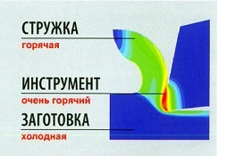

Резание металла — это процесс деформации материала заготовки до момента отделения. В процессе такой деформации выделяется много тепла, значительно превышающего тепло, выделяющееся при трении между стружкой, режущей кромкой и заготовкой. Тепло накапливается в зоне резания, повышая температуру, и если она становится слишком высокой, то это может привести к ухудшению характеристик режущей кромки (снижению срока службы инструмента) и изменению структуры материала заготовки. Для эффективного резания необходимо поддерживать температуру в допустимых пределах, снижая тепловыделение и максимально отводя тепло из зоны резания. Рассмотрим некоторые наиболее важные факторы.
Существует несколько способов снижения тепловыделения при резании. С точки зрения режущего инструмента большое значение имеет геометрия режущей кромки. Более острая кромка больше режет обрабатываемый материал и меньше генерирует тепла.
Скорость резания также имеет значение, так как при более высоких скоростях деформация материала происходит быстрее, генерируя больше тепла. Однако при снижении скорости резания для уменьшения тепловыделения следует учитывать, что скорость должна оставаться достаточно высокой для «размягчения» материала заготовки в зоне резания (повышенные температуры делают материал заготовки мягче). При более высоких скоростях резания также образуется больше стружки в единицу времени, то есть имеется больше материала для поглощения тепла и его отвода из зоны резания. В действительности наиболее эффективным методом отвода тепла из зоны резания является его удаление со стружкой.
Увеличение подачи также может способствовать теплоотводу, так как при этом образуется более толстая стружка (доступен больший объем для отвода тепла).
Необходимо также учитывать свойства материала заготовки. К примеру, теплопроводность материала (его способность проводить тепло) влияет на количество тепла, которое может быть поглощено стружкой. При низкой теплопроводности больше тепла остается в зоне резания, что приводит к повышению температуры резания.
Твердость — еще один важный параметр, который следует учитывать. Чем тверже материал заготовки (т. е. чем сильнее он сопротивляется деформации), тем больше тепла выделяется в процессе резания. С этим связано деформационное упрочнение, которое происходит при увеличении твердости материала в результате его деформации. Материалы с высокой склонностью к деформационному упрочнению создают больше тепла, так как они становятся тверже в месте резания.
Очень важным элементом отвода тепла из зоны резания также является смазочно-охлаждающая жидкость (СОЖ)
Наиболее эффективный метод отвода тепла из зоны резания - удаление его со стружкой.